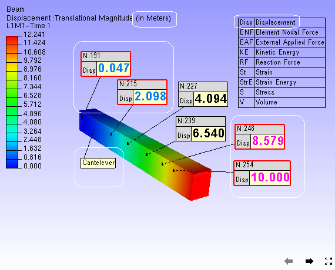

CAE Result Options
The CAE Result Options panel allows users of VCollab Presenter to set and modify CAE models and result display names, result units and result legend type.
Result Options Panel

The various fields and options available in the Result options panel are explained below
| Model | Lists all CAE model names. |
| Display Name | Allows users to modify model display names. |
| Result | Lists all results of selected CAE model. |
| Display Name | Allows users to modify the result display name. |
| Default Derived | Allows users to select and set default derived names for the selected result. |
| Units | Allows users to edit selected result units. |
| Distinct Range | Allows users to set the result contour to distinct type. If the number of unique result values are less than 32, then the result is a valid distinct result. Contour and legend can be mapped to unique colors. i.e., One color is to one contour value. |
| Limits for Highlighting Labels | Allows users to min and max range values for the selected result to highlight labels beyond this range. |
| Apply To All Models | Enable to apply the above options to all CAE models. |
| Apply | Applies the modifications. |
Steps to modify and set the options
- Select a CAE model name from the drop down list.
- Modify the model display name to be used in probe labels.
- Select a result of interest from the result drop down list.
- Modify the result display name to be used in probe labels.
- Select a derived type of result name to set it as default.
- Enter the units.
- Check the distinct range option if the result is a valid distinct result.
- Set min and max values for the result to highlight the labels beyond the range by text color.
- Check Apply To All Models option to carry all modifications done to all CAE models.
- Click Apply and notice the changes in CAE legend and probe labels.
Corresponding changes in viewer. (Legend and Probe/Hotspot labels)
